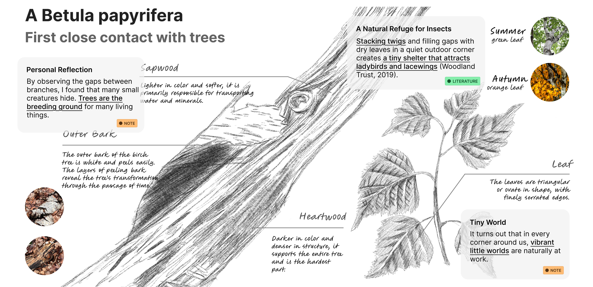

Client
TU/e
Project
Exchange Project
My role
Researcher
Year
2025
TU/e Master's Design Projects
Tags: IoT Product, Product Research, Cross-cultural, International
Completed three projects during the semester, focusing on European teenagers as TA. Responsible for conducting user interviews and prototype testing, while also serving as the lead researcher to explore and validate design theories.

SOTO-IoT Device Design
This project centers on designing a next-generation IoT device with a strong emphasis on social interaction, aiming to enhance non-verbal communication in close relationships.

Redefining IoT Interaction
Unlike conventional lamps that rely solely on button-based controls, SOTO introduces a novel interaction model: leaf-like panels open and close to adjust brightness, while vertical movement turns the lamp on or off.
These tactile interactions not only offer intuitive usability but also enable users to express subtle social cues through the device, expanding the communicative potential of IoT products.

Cross-Cultural Collaboration and Product Development
This design project was developed in collaboration with teammates from various European countries, providing valuable cross-cultural teamwork and full-English product development experience.
This design project was developed in collaboration with teammates from various European countries, providing valuable cross-cultural teamwork and full-English product development experience.
COSMORY-Arduino Board Game
Centered around the concept of “time,” COSMORY is a memory-challenging, competitive board game that combines Digital Twin technology with the Arduino platform as its physical medium.

Theoretical Foundations Behind the Design
The game draws on principles from game theory and strategic gameplay, integrating Digital Twin concepts into its core mechanics.
Using the MDA framework (Mechanics, Dynamics, Aesthetics), we systematically planned prototype validation and structured iteration throughout the development process.

User Testing and International Feedback
Teenagers were selected as the primary target users. We conducted user testing using paper prototypes and gathered feedback from participants of diverse nationalities, including the Netherlands, Italy, and the United States.
All sessions were conducted in English, which strengthened the game’s international usability and design relevance.

Logo Animation of COSMORY (Tool:Adobe After Effects) - Made by Catherine Tsai
Natural Design-Wood Material
Sustainability and nature-driven design are fundamental pillars in Dutch product design culture. This project explores wood as a material, using sensory observation and personal reflection as the foundation for creating a design that embodies both natural aesthetics and environmental values.
A Nature-Inspired Shelter for Small Creatures
Inspired by the layered structure of Dutch birchwood and the region’s rainy, unstable climate, I designed a small-scale animal shelter that dissolves naturally into its surroundings.
Even after it collapses or deteriorates, the structure serves as a temporary habitat for creatures, ultimately reintegrating into the ecological cycle.


Interactive Simulation and Exhibition
During the final showcase, I created an exhibition board that visualized the natural decay process of the shelter.
Interactive samples were made available for visitors to engage with, allowing them to better understand the design philosophy through hands-on experience.

Prev (P)
Aitify-AI Image Generator Application
Next (N)
Emotional Ocean：Product x App Design

© 2025 All rights Reserved. Design by Catherine Tsai